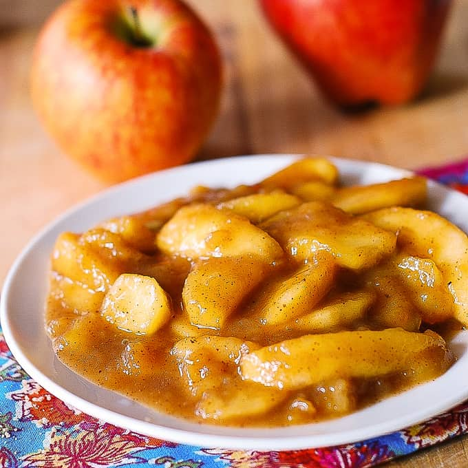

Cooked Apples

Description:
Cut apple pieces seasoned & cooked in sugar, cinnamon and butter.
Ingredients:
- Apples
- Cinnamon
- Brown Sugar
- Butter
- Salt
- Milk or Fruit Juice
Steps:
- Quarter apples, remove their cores and seeds
- Cut coreless apple quarters into bite-sized pieces
- Place apple pieces into cooking pot with just enough milk or juice to prevent burning
- Add all other ingredients and cook on a low flame with the lid on for at least 20 min
- Stir once every 10 min, serve when apples are slightly soft and a slightly thick sauce has formed